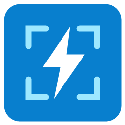

Seu próprio atalho
Use Print Screen ou configure uma combinação com Ctrl, Alt, Shift e Win. Arraste para selecionar a área desejada.

ligthscreenshotSelecione uma área da tela, adicione suas anotações e salve. Um aplicativo discreto na bandeja, pronto no seu atalho.
Gratuito · Licença MIT · Runtime .NET incluído
A edição multiplataforma oferece captura, seleção de área na imagem, anotações e atalho configurável. Disponível para Linux x64, macOS Intel, Apple Silicon e Windows x64.
Ver pacotes da prévia →Linux: AppImage, DEB ou TAR.GZ. Mac: DMG ou ZIP, com arm64 para Apple Silicon e x64 para Intel. Windows: executável portátil.
Versão experimental. No macOS, autorize Gravação de Tela; o aplicativo ainda não tem assinatura Developer ID nem notarização. No Linux Wayland, captura e atalhos dependem dos portais do desktop. Consulte as notas da prévia antes de instalar.
Use Print Screen ou configure uma combinação com Ctrl, Alt, Shift e Win. Arraste para selecionar a área desejada.
Adicione setas, retângulos, desenho livre e texto. Escolha a cor e desfaça quando precisar.
Salve em PNG ou copie para a área de transferência. O aplicativo não faz upload das suas capturas.
ligthscreenshot.exe. Não é necessário instalar o .NET.Para trocar o atalho: botão direito no ícone → Configurações. Para encerrar: Sair.
O código está disponível para você inspecionar, modificar e compartilhar. Projeto independente, sem vínculo com o Lightshot.
Versão experimental para Windows x64 compatível com .NET 10. O executável ainda não tem assinatura digital. A interação gráfica precisa de validação manual.
Copiar usa a área de transferência do Windows. Histórico e sincronização dependem das configurações do sistema. Outro aplicativo pode ocupar o atalho; nesse caso, escolha uma nova combinação em Configurações.
Baixar checksum SHA-256